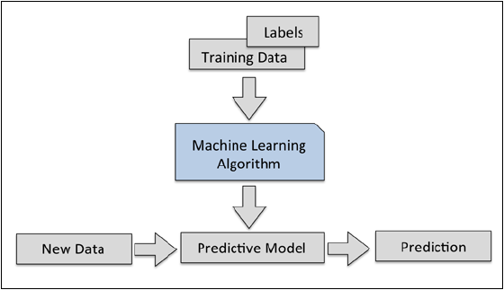
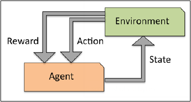

¿Qué es?
Es la aplicación de la ciencia de algoritmos para darle sentido a la
información, especialmente en la era donde ésta viene en cantidades abundantes
y con las nuevas tecnologías se puede convertir toda esa información en
conocimiento.
Creando conocimiento
La IA evolucionó a un nuevo nivel de aprendizaje automático a partir de
algoritmos que reconocen la información y hacen predicciones de la misma,
gradualmente mejora su rendimiento y actualiza sus "conocimiento" (más adelante
se entenderá como los modelos de información)
Tipos de aprendizajes
Se diferencias 3 tipos:
-
Aprendizaje supervisado:Predicciones a partir de modelos de
información para generar predicciones a partir de modelos similares.
Ya se conoce la respuesta correcta

-
Aprendizaje no supervisado:Explora la información, para encontrarle
un sentido.
No se conoce el tipo o la estructura de la información dada.

-
Aprendizaje reforzado: Se forma un sistema basado en darle una
recompensa al obtener un estado, a partir de la interacción con el ambiente.
Se definen recompensas a través de las acciones que toma dependiendo el
ambiente.
Procesado de información
Los datos que se toman, normalmente, es de baja calidad y no puede ser usada
para entrenar. Antes de su uso se necesita procesar para que tenga salidas
mas limpias. La información extraida del mundo real normalmente esta llena
de errores y valores sin sentido. Por esto es importante "limpiarla". Hay
2 formas de hacerlo.
- Limpieza de datos
- Reducción de datos
Limpieza de datos
-
Completar los datos que faltan
- Ignoran tuplas
- Usar el significado para completar
- Predecir el valor perdido
-
Suavizar los errores de los datos
Hay varias formas de hacerse:
- Particionar en iguales. Tuplas del mismo rango.
- Suavizando en iguales. Por ejemplo: (8, 8, 8)
- Suavizando por uniones. Por ejemplo: (3, 3, 15)
-
Por último remueve las partes aisladas. Puede ser por métodos:
- Clustering
- Ajuste a la curva
- Test de hipótesis con un modelo
Reducción de datos
-
Reducción de cantidad de atributos:
- Agregado de dato: aplicando roll-up, slice o dice
- Removiendo atributos irrelevantes
-
Reducción de los valores de atributos:
- Clustering: Agrupa valores
- Agregado o generalizando
-
Reducción de números de tuplas por sampling
Algunos métodos de aprendizaje
- Regresión lineal
- Arboles de decisión
- Clasificador bayesiano ingenuo
- KNN
- Soporte vectorial
Si querés saber como funcionan hace click aca